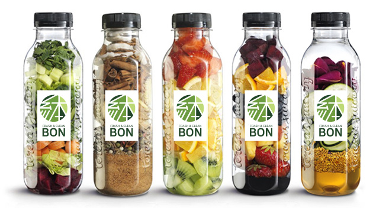

건강주스
그날의 신선한 건강쥬스을 만나보세요.

케일 사과 주스 / 코코넛 아몬드
주스 / 딸기 오렌지 키위 주스/
오렌지 자두 블루베리 딸기 주스
/ 자색 고구마 오이 치아씨드 주스
세계보건기구(WHO)가 '최고의 채소'로 꼽는 케일은 잘 알려진 항암효과 외에도 수많은 효능을 자랑합니다.
케일의 영양성분은 열에 약하기 때문에 생으로 갈아 마시는 것이 체내 흡수에 가장 효과적입니다.
만나농장의 채소는 아쿠아포닉스 농산물로는
아시아 최초로 미국 농무부(USDA)의 Organic 인증을 받은 안전하고 믿을 수 있는 채소입니다.
만나박스의 케일은 잎이 연하며 맛과 영양이 뛰어납니다.
6종 이상의 고급 케일 중 그 주에 가장 신선한 3종으로 랜덤 구성됩니다.